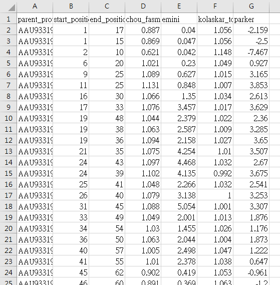
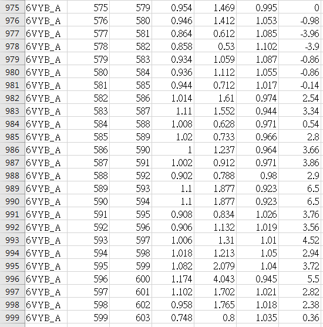
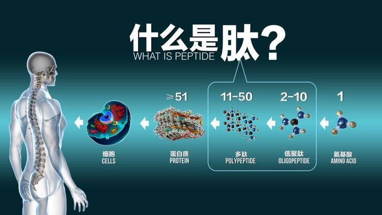
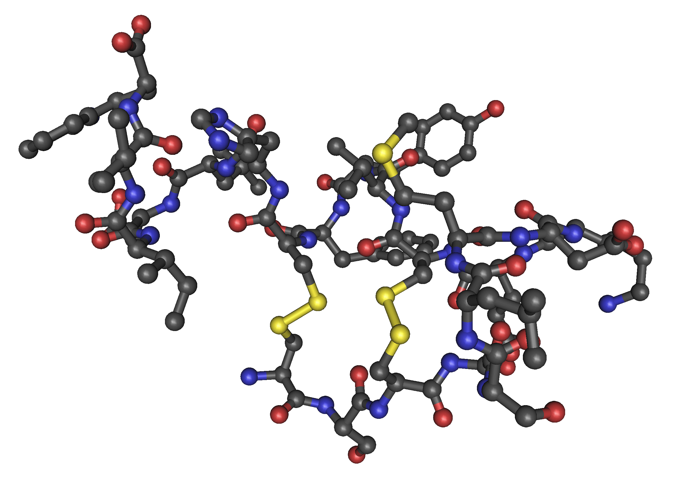

COVID-19/SARS B細胞表位預測
用於疫苗開發的表位預測
團隊成員:109598048 徐雋銘 ; 109598054 方佑瑋
由未來(Future)公司發佈了Bell表位預測(Bcell epitope prediction)的數據集和樣本代碼，這是疫苗開發中的關鍵研究課題之一，可免費獲得。
此資料集是在他們的研究過程中開發的，其中包含的資料來自IEDB和UniProt。他們簡要地描述了此數據集所涵蓋的
B 細胞表位預測。
…ೊ…ೊ…ೊ…ೊ…ೊ…ೊ…ೊ…ೊ…ೊ…ೊ…ೊ…ೊ…ೊ…ೊ…ೊ…ೊ…ೊ…ೊ…ೊ
研究B細胞有什麼用?
B細胞在體內誘導抗原特異性免疫反應，通過識別抗原蛋白的亞區（表位區）產生大量抗原特異性抗體。它們可以通過將抗體與抗原蛋白結合來抑制其功能。表位區域的預測有利於旨在誘導抗原特異性抗體產生的疫苗的設計和開發。他們相信這個數據集和代碼不僅對COVID-19有用，而且對未來的醫療數據分析也有廣泛的用處。
…ೊ…ೊ…ೊ…ೊ…ೊ…ೊ…ೊ…ೊ…ೊ…ೊ…ೊ…ೊ…ೊ…ೊ…ೊ…ೊ…ೊ…ೊ…ೊ
數據：
關於氨基酸肽是否表現出抗體誘導活性（由活性標籤標記）的信息可以從 IEDB 獲得，IEDB
用於許多以前的研究。因此，該信息被用作標籤數據。
他們還從 IEDB 中提供的 B細胞表位數據中獲得了表位候選氨基酸序列（肽）和活性標記數據。
所提供的抗體蛋白僅限於構成 IEDB 中記錄最多的類型的IgG。為方便起見，他們從實驗中排除了代表同一肽的抗體活性的不同定量測量的記錄。
從 IEDB獲得的表位數據對應於五種類型的活性：“陽性-高”、“陽性-中等”、“陽性-低”、“陽性”和“陰性”。
訓練資料集內容:
244筆SARS資料(綠色),355筆COVID19資料(藍色)
每筆資料的屬性:
1.parent_protein_id: 親本蛋白 ID (用來進行SARS和COVID19的二元分類)
2.start_position: 肽段起始位置
3.end_position: 肽的末端位置
4.chou_fasman: 肽特徵，β轉角
5.emini: 肽特徵，相對表面可及性
6.kolaskar_tongaonkar: 肽特徵，抗原性
7.parker:肽特徵，疏水性
…ೊ…ೊ…ೊ…ೊ…ೊ…ೊ…ೊ…ೊ…ೊ…ೊ…ೊ…ೊ…ೊ…ೊ…ೊ…ೊ…ೊ…ೊ…ೊ
這是我們用來進行訓練的CSV檔 AAU93119:SARS ; 6VYB_A:COVID-19


…ೊ…ೊ…ೊ…ೊ…ೊ…ೊ…ೊ…ೊ…ೊ…ೊ…ೊ…ೊ…ೊ…ೊ…ೊ…ೊ…ೊ…ೊ…ೊ

